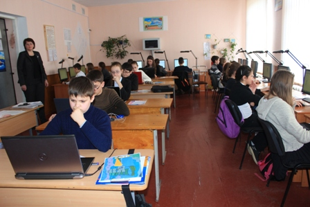
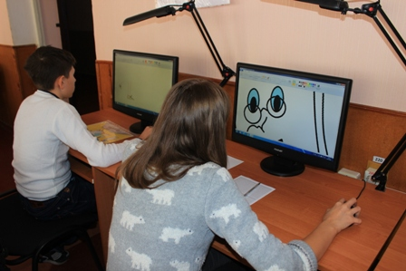
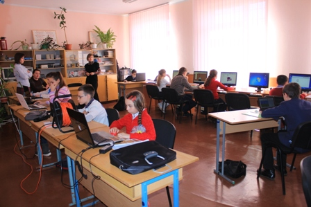
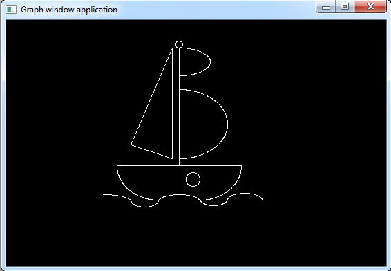
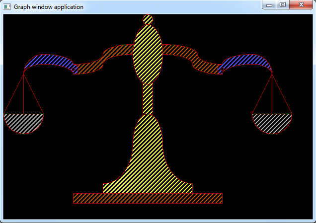
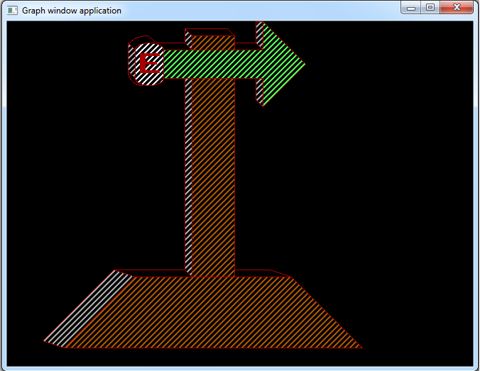

Конкурс Перлинка
В конкурсі приймають участь команди шкіл та позашкільних закладів області, складені з учнівської молоді, яка відвідує комп’ютерні гуртки та не досягла 14 років. Вік визначається на день проведення мандатної комісії. Делегації складаються з трьох осіб – двох конкурсантів та одного керівника. При бажанні заклад має можливість виставляти на конкурс більше одної команди.
|  |  |
 |  |
Умови проведення
Учасник конкурсу приймає участь у кожній номінації (малюнок в Paint та програмування малюнку в Pascal). Місце конкурсанта складається із суми балів, які він отримав за участь у двох номінаціях. Всі комп’ютери на робочих місцях учасників конкурсу мають працювати в автономному режимі. Локальна мережа має бути відключена.
Загальні положення
1.1. Обласний конкурс учнівської молоді з інформаційних технологій «Комп’ютерна перлинка» (далі – конкурс) проводиться щороку серед учнів молодшого шкільного віку шкіл, ліцеїв, навчально – виховних комплексів та позашкільних навчальних закладів. Конкурс проводиться в номінаціях «Комп’ютерний вернісаж» та «Графічне програмування».
1.2. Основна мета проведення конкурсу – це максимальне розкриття індивідуальних здібностей, нахилів, обдарованості дітей; формування основ інформаційної культури, яка виражається в умінні збирати, нагромаджувати й обробляти інформацію за допомогою комп’ютера; розвиток алгоритмічного мислення, забезпечення наступності з подальшими ланками навчання.
Поради(обов'язково)
Якщо ви перейшли за цим посиланням, це означає, що ви отримали базові знання і вже хочете почати готуватися до конкурсу Перлинка. Що ж, і ми вам з цим допоможемо.
Що нам потрібно для початку? Для початку нам треба та сама частина системи координат,на якій ми намалюємо малюнок, координат з якого
будемо перености в нашу програму.Ось та сама система координат
 cистема координат. ЇЇ можна, як і роздрукувати,так і
скопіювати у графічний редактор(типу Paint) й вже там малювати.
cистема координат. ЇЇ можна, як і роздрукувати,так і
скопіювати у графічний редактор(типу Paint) й вже там малювати.
Малюйте так,щоб вам було зручно потім переносити координат в програму. Тобто намагайтесь малювати 70% вашого малюнку на "видимих точка" (типу 100, 100). Так само з дугами. У складиних малюнках для того, щоб співпадала дуга з лінніями(або з іншим елементом), потрібно точно виміряти її градуси. Це легко зробити, якщо уявити собі в голові овал з цією дугою (з її градусами), а потім просто вирівнювати.
Останнє чому потрібно тобі навчитися - це вміти економити час. Так, як конкурс триває приблизно одну годину,треба встигнути написати с коду, як можна більше. Тому так важливо начитися швидко набирати текст у Pascal'і. Це приходить з часом,тому тренуйтеся,як можна більше. Також можете для економій часу, копіювати відносно схожі елементи програми за допомогою клавіш(Ctrl+Insert та Shift+Insert).
Мабуть, що все. Ось вам завдання для підготовкизавдання.
Також можете продивитися приклади програм у розділі математичні криві
(якщо до сих пір не дивилися), або прям після цього тексту знизу. Бажаю успіхів у конкурсі!
Приклади програм
Корабель

uses graph; var a,b:integer; begin a:=detect; initgraph(a,b,''); line(240,40,180,180); line(180,180,240,200); line(240,40,240,200); line(250,40,250,210); circle(250,35,5); ellipse(250,60,0,90,45,20); ellipse(250,60,270,360,45,20); ellipse(250,150,0,90,70,50); ellipse(250,150,270,360,70,50); line(160,210,340,210); ellipse(220,210,180,270,60,50); ellipse(140,262,10,90,40,10); ellipse(200,260,182,358,20,10); ellipse(250,262,2,178,30,10); ellipse(300,258,182,358,20,10); ellipse(345,260,2,178,25,10); ellipse(280,210,270,360,60,50); circle(270,230,10); readln; end. |
Терези

uses graph; var a,b:integer; begin a:=detect; initgraph(a,b,''); setcolor(red); rectangle(140,360,440,380); setfillstyle(red,6); floodfill(290,370,red); line(200,360,200,340); line(380,360,380,340); ellipse(200,260,270,360,60,80); ellipse(380,260,180,270,60,80); ellipse(290,260,0,180,30,60); setfillstyle(red,14); floodfill(290,260,red); line(300,202,300,138); line(280,202,280,138); ellipse(290,80,0,360,30,60); setfillstyle(red,14); floodfill(290,170,red); circle(290,10,10); setfillstyle(red,14); floodfill(299,10,red); setfillstyle(red,14); floodfill(290,80,red); ellipse(320,80,0,93,70,20); ellipse(320,100,0,90,60,20); ellipse(440,80,180,270,50,20); ellipse(440,100,180,270,60,20); ellipse(500,100,90,180,60,20); ellipse(500,120,90,180,60,20); ellipse(440,110,90,270,10,10); ellipse(500,120,0,90,40,40); ellipse(500,120,0,90,40,20); circle(440,110,3); setfillstyle(red,6); floodfill(360,80,red); setfillstyle(red,9); floodfill(520,100,red); ellipse(260,80,87,180,60,20); ellipse(260,100,90,180,60,20); ellipse(140,80,270,360,60,20); ellipse(140,100,270,360,60,20); ellipse(140,110,0,90,10,10); ellipse(140,110,270,360,10,10); ellipse(80,100,0,90,60,20); ellipse(80,120,0,90,60,20); ellipse(80,120,90,180,40,40); ellipse(80,120,90,180,40,20); circle(140,110,3); setfillstyle(red,6); floodfill(220,80,red); setfillstyle(red,9); floodfill(60,100,red); line(540,120,540,200); line(540,120,500,200); line(540,120,580,200); ellipse(540,200,180,360,40,40); line(40,120,40,200); line(40,120,0,200); line(40,120,80,200); ellipse(40,200,180,360,40,40); line(580,200,500,200); line(0,200,80,200); setfillstyle(red,7); floodfill(40,220,red); setfillstyle(red,7); floodfill(540,220,red); readln; end. |
Флюгер

uses graph; var a,b:integer; begin a:=detect; initgraph(a,b,''); setcolor(red); line(80,460,500,460); line(80,460,180,360); line(500,460,400,360); line(180,360,400,360); setfillstyle(red,6); floodfill(300,400,red); line(80,460,50,450); line(50,450,150,350); line(150,350,250,350); line(180,360,150,350); line(250,350,260,360); setfillstyle(red,7); floodfill(80,450,red); line(400,360,370,350); line(370,350,320,350); line(320,350,320,360); rectangle(260,80,320,360); setfillstyle(red,6); floodfill(300,220,red); line(250,350,250,80); line(260,80,250,80); setfillstyle(red,7); floodfill(255,90,red); rectangle(260,20,320,40); setfillstyle(red,6); floodfill(290,30,red); line(250,30,250,10); line(250,10,260,20); line(250,30,260,40); line(250,10,310,10); line(310,10,320,20); setfillstyle(red,7); floodfill(255,30,red); line(360,40,220,40); line(360,80,220,80); line(220,40,220,80); line(360,40,360,0); line(360,80,360,120); line(360,0,420,60); line(360,120,420,60); setfillstyle(red,10); floodfill(280,60,red); line(360,120,350,110); line(350,110,350,80); setfillstyle(red,7); floodfill(355,110,red); line(360,40,350,30); line(350,30,350,0); line(350,0,360,0); line(350,30,320,30); setfillstyle(red,7); floodfill(355,30,red); line(180,40,180,80); ellipse(200,40,0,180,20,10); ellipse(200,80,180,360,20,10); settextstyle(1,0,4); outtextxy(187,45,'E'); setfillstyle(red,15); floodfill(200,60,red); line(250,30,210,30); line(170,70,170,30); line(180,40,170,30); line(180,80,170,70); setfillstyle(red,7); floodfill(175,70,red); ellipse(190,70,180,270,20,20); ellipse(198,40,90,160,30,20); line(198,20,210,30); readln; end. |